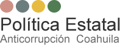

Home
Resumen ejecutivo
Marco jurídico
¿Que es la corrupción? - Causas y efectos
Metodología de la PEAC
Principios transversales
Diagnóstico
Contexto internacional y nacional
Contexto estatal
Ejes temáticos
Resumen Ejecutivo
Estructura de la PEAC
Prioridades estratégicas
Ejes temáticos
Principios transversales
Principios transversales
Programa de implementación
Seguimiento
L
a Política Estatal Anticorrupción (PEAC) es el documento rector que guiará los esfuerzos de las instituciones públicas y ciudadanas en materia de prevención, control y combate de los hechos de corrupción. Los insumos con los que se construyó surgen de mecanismos de participación ciudadana, de análisis académico y de alineación con la Política Nacional Anticorrupción (PNA).
¿QUÉ ES LA CORRUPCIÓN? CAUSAS Y EFECTOS
La corrupción es un problema público, estructural y sistémico. Es un problema público porque lacera la hacienda pública; es estructural porque cuenta con mecanismos sofisticados que no se encuentran delimitados por la función pública, es decir, se encuentra dentro y fuera del gobierno; y es sistémica, porque los diversos mecanismos que la caracterizan se reproducen a sí mismos para adaptarse a los escenarios que se vayan presentando, buscando mantenerse como un orden social. Es por ello que el combate a la corrupción requiere del trabajo coordinado de las instituciones, así como la participación activa de la sociedad.
La corrupción se entiende como un orden social que privilegia modos de interacción e intercambio basados en el particularismo y el favoritismo que pueden manifestarse en comportamientos institucionales y sociales que transgreden principios éticos y de integridad (PNA 2020:12).
La PEAC se enforcará en dar solución a un problema:
La incapacidad que se ha tenido tanto desde el Estado como de la sociedad para controlar la corrupción, esto es prevenirla, investigarla y sancionarla (PNA 2020:13).
Específicamente en nuestro Estado, derivado del análisis y la investigación, se identificaron rasgos particulares de la corrupción, los cuales están relacionados con:
• Falta de transparencia y homologación de criterios en los procesos de selección de servidores públicos, lo que da lugar a la arbitrariedad, opacidad y abuso de poder.
• Falta de espacios de participación ciudadana, de una cultura cívica y de la legalidad, así como el poco involucramiento de la sociedad en el tema.
• Problemas en los puntos de interacción del gobierno y sociedad, en especial en los trámites y servicios.
• Falta de una cultura de denuncia, así como procesos de detección, investigación y sanción de los delitos y hechos de corrupción largos que provocan una baja en la eficiencia.
Algunos de los efectos de la corrupción son: los desvíos de programas sociales, ineficiencias en la prestación de servicios públicos, aumentos en términos de desigualdad e injusticia, disminución de la confianza en las instituciones, debilitamiento del Estado de Derecho, disminución de la calidad de vida, así como propagación de otras formas de delincuencia (INEGI, 2016: IX).